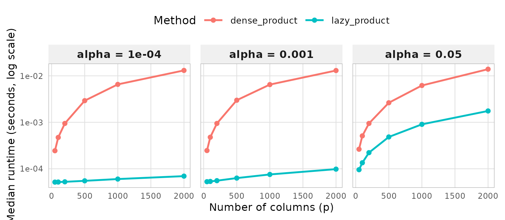
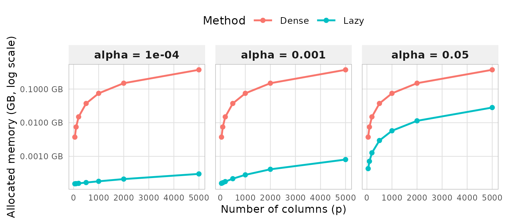

performance
performance.Rmd
library(lazymatrix)
#>
#> Attaching package: 'lazymatrix'
#> The following object is masked from 'package:base':
#>
#> normPerformance of lazymatrix
In this vignette, we discuss the main reason for lazy computation,
namely the increase in performance. Assume X as the sparse
data matrix containing fetures, lazy_X the
LazyMatrix object and A is the normalized
version obtained using base::scale(X). We use the package
bench to microbenchmark the computation time of
matrix-vector multiplication, hence comparing the operation
lazy_X%*%b against A%*%b. Thereafter, we look
at memory allocation, where we compare storing the
LazyMatrix object and the normalized object.
Helper Functions
For these experiment, we need a set of helper functions. As the main
use-case is working with sparse data, we define a helper forgenerating
sparse matrices create_sparse_matrix_col() which allows for
adjusting the parameter sparsity_col so the proportion of
elements that are non-zero within each column. For simplicity, this
parameter will be called
,
Then, we use the helper bench_multiply() where we define
the LazyMatrix object for the input matrix, normalize it
and then we benchmark matrix-vector multiplication. The function
benchmark_memory() is written in a similar way, though it
uses utils::object.size() to measure memory allocation of
an object, the lazy and the dense. Lastly, two helper functions which
are used for using consistent themes for ggplot2 throughout
the vignette.
library(Matrix)
library(bench)
library(dplyr)
#>
#> Attaching package: 'dplyr'
#> The following objects are masked from 'package:stats':
#>
#> filter, lag
#> The following objects are masked from 'package:base':
#>
#> intersect, setdiff, setequal, union
library(ggplot2)
#--------------------------------------------------
# Sparse matrix generator
#--------------------------------------------------
create_sparsematrix_col <- function(n, p, sparsity_col) {
# sparsity_col = fraction of non-zeros PER COLUMN
# So each column has round(sparsity_col * n) non-zero entries
n_nonzero_col <- round(sparsity_col * n)
i_all <- c()
j_all <- c()
for (col in 1:p) {
i_col <- sample(1:n, n_nonzero_col, replace = FALSE)
i_all <- c(i_all, i_col)
j_all <- c(j_all, rep(col, n_nonzero_col))
}
pairs <- unique(data.frame(i = i_all, j = j_all))
x <- rnorm(nrow(pairs))
Matrix::sparseMatrix(
i = pairs$i,
j = pairs$j,
x = x,
dims = c(n, p)
)
}
#--------------------------------------------------
# Benchmark function Computation Time
#--------------------------------------------------
bench_multiply <- function(sparse_matrix, b) {
A <- scale(sparse_matrix, center = TRUE, scale = TRUE)
X <- LazyMatrix(sparse_matrix, "sd", "mean")
bench::mark(
dense_product = { A %*% b },
lazy_product = { X %*% b },
check = FALSE,
min_iterations = 20
)
}
#--------------------------------------------------
# Benchmark function for Memory Allocation
#--------------------------------------------------
benchmark_memory <- function(M) {
dense_size <- tryCatch({
A_dense <- scale(as.matrix(M), center = TRUE, scale = TRUE)
mem <- as.numeric(utils::object.size(A_dense)) / 1024^2
rm(A_dense); gc()
data.frame(method = "Dense", success = TRUE, mem_MB = mem)
}, error = function(e) {
message("Dense error: ", e$message)
data.frame(method = "Dense", success = FALSE, mem_MB = NA)
})
lazy_size <- tryCatch({
X_lazy <- LazyMatrix(M, "sd", "mean")
mem <- as.numeric(utils::object.size(X_lazy)) / 1024^2
rm(X_lazy); gc()
data.frame(method = "Lazy", success = TRUE, mem_MB = mem)
}, error = function(e) {
message("Lazy error: ", e$message)
data.frame(method = "Lazy", success = FALSE, mem_MB = NA)
})
bind_rows(dense_size, lazy_size)
}
#--------------------------------------------------
# Plot Theme used throughout the thesis for ggplot2
#--------------------------------------------------
thesis_theme <- function(base_size = 12) {
theme(
panel.background = element_rect(fill = "white", colour = NA),
plot.background = element_rect(fill = "white", colour = NA),
panel.grid.major = element_line(colour = "grey85"),
panel.grid.minor = element_line(colour = "grey92"),
panel.border = element_rect(colour = "black", fill = NA, linewidth = 0.8),
text = element_text(size = base_size),
axis.text = element_text(size = rel(1.01)),
axis.text.x = element_text(size = rel(1.01), angle = 45, hjust = 1)
)
}
#--------------------------------------------------
# Plot Theme used throughout vignettes for ggplot2
#--------------------------------------------------
vignette_theme <- function(base_size = 12) {
theme_minimal(base_size = base_size) +
theme(
# Subtle background strip for facet labels
strip.background = element_rect(fill = "#f0f0f0", colour = NA),
strip.text = element_text(face = "bold", size = rel(0.95)),
# Thin, unobtrusive grid
panel.grid.major = element_line(colour = "grey88", linewidth = 0.4),
panel.grid.minor = element_blank(),
# Light border just around facet panels
panel.border = element_rect(colour = "grey70", fill = NA, linewidth = 0.5),
panel.spacing = unit(0.8, "lines"),
# Legend inside or on top saves horizontal space in HTML
legend.position = "top",
legend.key.width = unit(1.8, "lines"),
# Axis: no need to rotate if labels are short
axis.text.x = element_text(size = rel(0.9)),
axis.text.y = element_text(size = rel(0.9)),
axis.title = element_text(size = rel(0.95)),
plot.margin = margin(8, 12, 8, 8)
)
}Results of Computation Time Benchmark
We run the experiment as follows: let n be the number of
rows of the sparse matrix which we let be constant for all matrices at
n <- 10000. In statistics, the number of rows usually
denotes the number of observations and the columns the features. Hence,
letting n be constant and augmenting the columns
p reflects the experiment of adding features to an existing
dataset. Apart from dimensionality, the experiment also depends on
sparsity, so the proportion of non-zero elements for every column. We
test for three levels of sparsity, 5 %, 0.1 % and 0.01 %. A rule of
thumb when working with sparse matrices, is that the larger the
dimensionality, the lesser the sparsity usually.
Then, we run the benchmark function for matrix-vector multiplication
defined above for every p and every sparsity.
The results are therafter translated into seconds and we keep them in a
tibble which is used to graph the result.
#--------------------------------------------------
# Parameters (smaller for testing)
#--------------------------------------------------
n <- 10000
sparsity_cols <- c(0.05, 0.001, 0.0001)
p_values <- c(50, 100, 200, 500, 1000, 2000)
#--------------------------------------------------
# Run benchmarks
#--------------------------------------------------
results <- list()
counter <- 1
for (sc in sparsity_cols) {
cat("Running sparsity_col =", sc, "\n")
for (p in p_values) {
cat(" p =", p, "\n")
M <- create_sparsematrix_col(n = n, p = p, sparsity_col = sc)
b <- rnorm(p)
bm <- bench_multiply(M, b)
tmp <- bm %>%
select(expression, min, median, mem_alloc) %>%
mutate(sparsity_col = sc, n = n, p = p)
results[[counter]] <- tmp
counter <- counter + 1
rm(M); gc()
}
}
#> Running sparsity_col = 0.05
#> p = 50
#> p = 100
#> p = 200
#> p = 500
#> p = 1000
#> p = 2000
#> Running sparsity_col = 0.001
#> p = 50
#> p = 100
#> p = 200
#> p = 500
#> p = 1000
#> p = 2000
#> Running sparsity_col = 1e-04
#> p = 50
#> p = 100
#> p = 200
#> p = 500
#> p = 1000
#> p = 2000
#--------------------------------------------------
# Process results
#--------------------------------------------------
benchmark_results <- bind_rows(results) %>%
mutate(
method = as.character(expression),
median_sec = as.numeric(median),
min_sec = as.numeric(min)
)The results are presented in the following plot.
#--------------------------------------------------
# Plot for computation time
#--------------------------------------------------
ggplot(
benchmark_results %>%
mutate(sc_label = factor(
paste0("alpha = ", sparsity_col),
levels = paste0("alpha = ", sort(unique(sparsity_col)))
)),
aes(x = p, y = median_sec, color = method, group = method)
) +
geom_line(linewidth = 1) +
geom_point(size = 2) +
scale_y_log10() +
facet_wrap(~ sc_label, nrow = 1) +
labs(
x = "Number of columns (p)",
y = "Median runtime (seconds, log scale)",
color = "Method"
) +
vignette_theme(13)
Each facet corresponds to a sparsity level, with the logarithm of median runtime on the vertical axis and the number of features on the horizontal axis. The red line represents the dense computation while the blue is the lazy computation. Looking at the figure, we note that dense computation requires operations for the centering step, regardless of sparsity, since every element must be explicitly centered. This is confirmed in the plot, where the dense curve is identical across all three facets, increasing only with . The blue line representing the lazy computation however, shows clearly that computation time decreases as gets lower. For , the trend is similar to that of the dense computation, in the sense that as dimensionality gets higher, so does computation time. This follows from the complexity of lazy computation, which approaches as increases. Conversely, as sparsity decreases and , the computational advantage of lazy evaluation becomes clear. Lazy computation exploits sparsity by operating only over the non-zero entries, avoiding the redundant computation on zero-valued elements that dense methods perform. Hence, the lazy computation gets better the sparser the matrix is, and also better the higher the dimensionality compared to dense methods.
Results of Memory Benchmark
The benchmark experiment is similar to that of computation time. We let be constant, augment and test for three levels of sparsity. Here, the measurements we make is the amount of memory used for storing the different objects.
#--------------------------------------------------
# Parameters
#--------------------------------------------------
n <- 10000
sparsity_cols <- c(0.05, 0.001, 0.0001)
p_values <- c(50, 100, 200, 500, 1000, 2000, 5000)
#--------------------------------------------------
# Process results
#--------------------------------------------------
results <- list()
counter <- 1
for (sc in sparsity_cols) {
cat("Running sparsity_col =", sc, "\n")
for (p in p_values) {
cat(" p =", p, "\n")
M <- create_sparsematrix_col(n = n, p = p, sparsity_col = sc)
mem_res <- benchmark_memory(M)
mem_res <- mem_res %>%
mutate(sparsity_col = sc, n = n, p = p)
results[[counter]] <- mem_res
counter <- counter + 1
rm(M); gc()
}
}
#> Running sparsity_col = 0.05
#> p = 50
#> p = 100
#> p = 200
#> p = 500
#> p = 1000
#> p = 2000
#> p = 5000
#> Running sparsity_col = 0.001
#> p = 50
#> p = 100
#> p = 200
#> p = 500
#> p = 1000
#> p = 2000
#> p = 5000
#> Running sparsity_col = 1e-04
#> p = 50
#> p = 100
#> p = 200
#> p = 500
#> p = 1000
#> p = 2000
#> p = 5000
memory_results_col <- bind_rows(results) %>%
mutate(mem_GB = mem_MB / 1024)The results are presented in the following plot.
#--------------------------------------------------
# Plot for Memory Allocation
#--------------------------------------------------
ggplot(
memory_results_col %>%
mutate(sc_label = factor(
paste0("alpha = ", sparsity_col),
levels = paste0("alpha = ", sort(unique(sparsity_col)))
)),
aes(x = p, y = mem_GB, color = method, group = method)
) +
geom_line(linewidth = 1) +
geom_point(size = 2) +
scale_y_log10(
labels = scales::label_number(suffix = " GB", accuracy = 0.0001)
) +
facet_wrap(~ sc_label, nrow = 1) +
labs(
x = "Number of columns (p)",
y = "Allocated memory (GB, log scale)",
color = "Method"
) +
vignette_theme(13)
Each facet corresponds to a sparsity level, with the logarithm of median runtime on the vertical axis and the number of features on the horizontal axis. The red line represents the dense memory consumption while the blue is the lazy object’s. A key motivation forlazymatrix is the memory inefficiency of explicitly
materializing normalized matrices. We therefore construct a memory
benchmark under the same experimental setting as above, measuring memory
usage rather than computation time. The dense representation requires
memory regardless of sparsity, as centering destroys the sparse
structure and forces a full materialization of the matrix. As expected,
the dense representation grows linearly in memory with increasing
dimensionality. The implication being that using dense methods is
infeasible for larger-scale data. The lazy representation follows a
similar growth pattern at
,
as the data matrix and its associated location and scale parameters
together require
memory, and
remains large relative to
at high sparsity levels. As sparsity increases, however,
and the lazy representation retains significantly fewer bytes, directly
reflecting the theoretical memory complexity established earlier. For
the sparsest facet, memory consumption still grows with
but remains orders of magnitude smaller than the dense representation
across all three dimensions. In applications, high dimensionality and
high sparsity tend to be correlated, hence it is crucial for
LazyMatrixto perform well with the two parameters
considered.